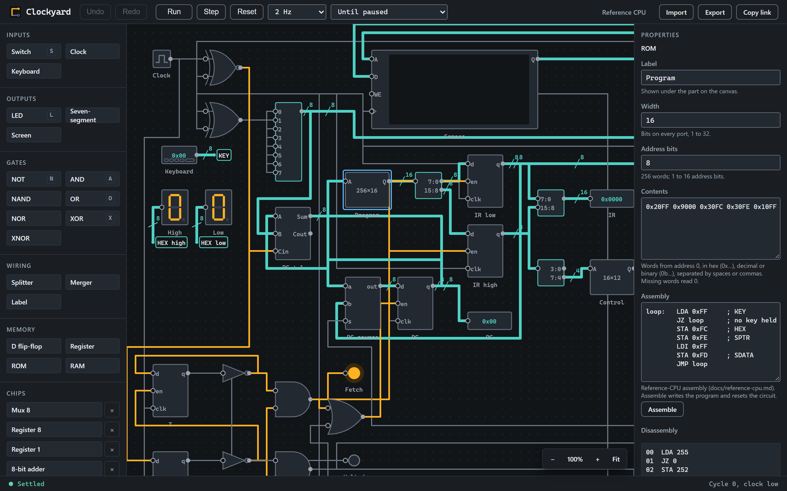
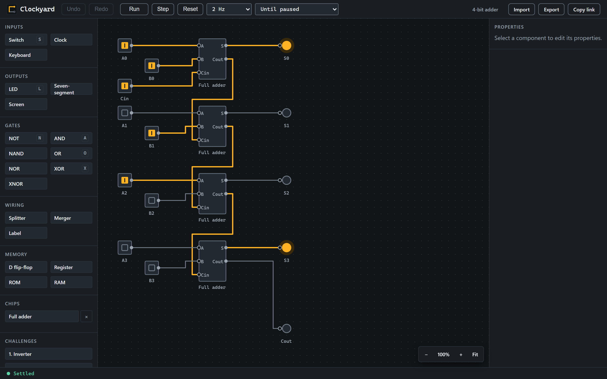
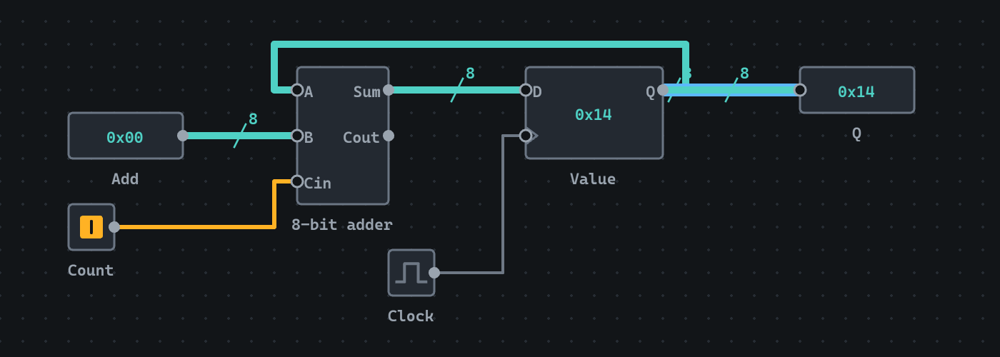
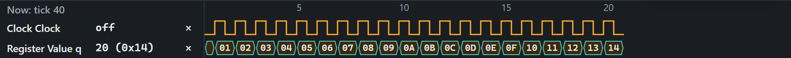
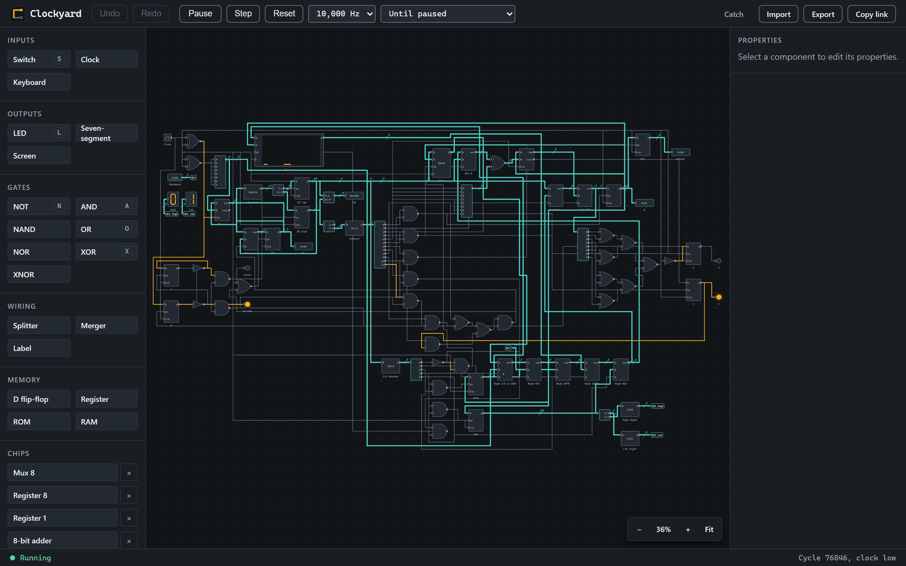
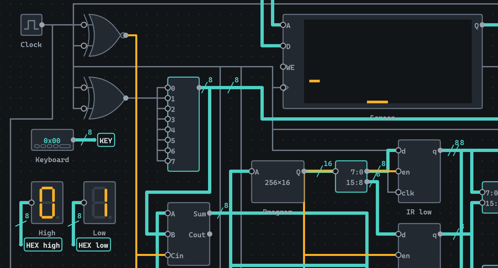

Open source · pre-alpha · runs in your browser
Build computers from their very first pulse.
Clockyard is a digital logic sandbox. Wire switches into gates, gates into adders, registers and memory, then build a CPU, write a program for it and watch your own hardware run it, one clock edge at a time.
No install, no account. Your circuits never leave your machine.

Computers are usually black boxes. Here, every layer is one you built.
Most of us use computers without ever seeing the machine underneath. Clockyard lets you assemble one yourself, starting from a single gate, and every part stays open: you can select any wire and see what it carries, step the clock and watch a register change, or open a component and see the gates inside.
A CPU you build runs through the simulated parts and wires you placed. Clockyard never swaps in a hidden software emulator to make it fast.
Gates and wires
Place switches, gates and LEDs, drag wires between their ports, and the circuit answers as you build it.
- Parts
- Switches, LEDs, NOT, AND, NAND, OR, NOR, XOR and XNOR, splitters and mergers, net labels.
- Components
- Select a group of parts and make it a component. The adder in Fig. 2 is one full adder, placed four times.
- Buses
- A wire can carry up to 32 bits. It is drawn thick and shows its value as hex.
- Editing
- Undo for every edit, keyboard shortcuts for every part, rotation, box select, automatic routing.
-
1High. Amber and one unit thicker. -
0Low. -
XUnknown, or two drivers disagree. -
ZNothing is driving it. -
0x2AA bus. Its value is a hex tag, never a colour per bit.

4-bit-adder example adding 5 + 3 + 1. Lit wires carry a 1; S3 and S0 read 9.Time
Add a clock and the circuit starts to remember. Flip-flops and registers change only on a rising edge, so you can step through a design one cycle at a time.
- Parts
- Clocks, D flip-flops, registers, ROM and RAM of any width up to 32 bits.
- Control
- Run, pause, step one cycle, reset. Run at 1 Hz to watch, or 10,000 Hz to play a game.
- Run until
- Stop the clock the moment an LED you choose lights: a breakpoint you wire yourself.
- Waveforms
- Watch up to 16 wires. Their history is recorded tick by tick by the engine, and a cursor reads any past tick.


8-bit-counter stepped 20 cycles, with its clock and register watched.A computer
Clockyard ships an 8-bit reference CPU, built from its own parts on its own canvas. Open it, take it apart, or use it as a map for building yours.
- Data
- 8 bits. Accumulator
A, flagsZandC. - Program
- ROM of 256 words × 16 bits, addressed by
PC. - Memory
- 256 bytes of RAM.
0xF0–0xFFreach the devices instead. - Devices
- A keyboard, a 64 × 32 pixel screen and two hex digits.
- Timing
- Two clock cycles per instruction: fetch, then execute.
- Checked
- Tests run the circuit next to a model of its specification and compare them after every cycle.

Programs
Select the program ROM and write assembly in the inspector. Assemble writes the words into the ROM and resets the circuit; errors are listed by line and change nothing.
; count down from 10, showing each value
LDI 10
loop: OUT
SBI 1
JZ done
JMP loop
done: OUT
HLT
NOP LDI LDA STA ADD SUB ADI SBI JMP JZ JC OUT HLT

catch example. Blocks fall onto a paddle you steer with the arrow keys; the score is on the hex digits.Challenges
Nine challenges climb from an inverter to the ALU the CPU needs. Each asks for a component with named pins, and Check runs it on a test bench inside the engine.
A check drives your inputs and reads your outputs, step by step, so any correct circuit passes. When one fails, you are told which step and what each pin read.
- Inverterfrom NAND
- XORfrom NAND
- Half addergates
- Full addergates
- 8-bit addergates, buses
- Registergates, flip-flop
- 8-bit registergates, flip-flops, buses
- 8-bit countergates, flip-flops, buses
- ALUgates, buses, your adder


How it works
One engine, written in Rust, decides what every wire carries. The editor only draws what it reports.
- Connectivity
- Wires name the ports they join. Nothing is inferred from where things sit, and two wires that cross are not connected unless they meet at a junction.
- Settling
- Every change settles in a bounded number of steps. A loop that never settles is reported as unstable, with the run paused, instead of hanging the page.
- Determinism
- The same circuit and the same inputs give the same result at any speed and any frame rate.
Yours, on your machine.
- No server
- Clockyard is static files. There is no account and no backend, and nothing you build is uploaded.
- Files
- Export a circuit as a JSON file and import it anywhere. Older file versions still open.
- Links
- Copy link puts the whole circuit after the
#in the address. Browsers do not send that part to any server; whoever opens the link gets the circuit. - License
- MIT or Apache-2.0, at your option.
Where it stands
Clockyard is pre-alpha. Each phase ends with a demo that works in the browser and is checked by tests. Details are in the roadmap.
- Phase 0Foundation: Rust engine in the browser through WebAssemblyDone
- Phase 1First circuit editor: gates, wires, save and loadDone
- Phase 2Components, junctions, routing, buses, net labelsDone
- Phase 3Clocks, flip-flops and virtual timeDone
- Phase 4A programmable 8-bit computer and its assemblerDone
- Phase 5The sandbox: devices, Catch, links, challenges and waveforms are in; blueprints and teaching material are nextIn progress
Start with one gate.
The editor opens on an empty sheet. Press S for a switch, A for an AND gate, L for an LED, and wire them up.
Or run it from source
git clone https://github.com/josep-audenis/clockyard
cd clockyard
pnpm install
pnpm devNeeds Node.js 22, pnpm 10 and a Rust toolchain with the wasm32-unknown-unknown target. See the README.